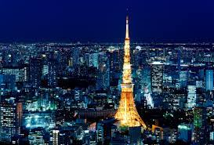
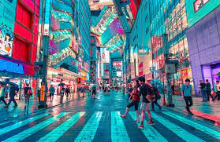
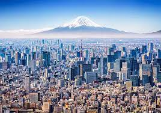
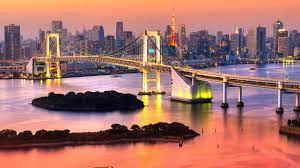
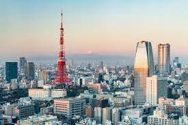

Tokyo, the bustling metropolis of Japan, is a captivating blend of tradition and modernity that ignites the senses and stirs the soul. This dynamic city is a tapestry of contradictions and harmonies, where serene temples coexist with neon-lit streets, and ancient customs merge seamlessly with cutting-edge technology. At its heart lies the Imperial Palace, a tranquil oasis amidst the urban chaos, where visitors can explore beautiful East Gardens and glimpse the Imperial family's residence. The juxtaposition of the ancient Edo Castle and the surrounding skyscrapers symbolizes Tokyo's vibrant history and forward-looking spirit. The city is synonymous with innovation, housing the Akihabara district, a haven for tech enthusiasts. Tokyo's dedication to futurism is also evident in the architecture, from the Tokyo Skytree's towering presence to the uniquely designed buildings that grace the skyline.
In Tokyo, culinary adventures are abundant. From sushi bars to cozy izakayas, the city's diverse food scene reflects its multiculturalism. The Tsukiji Fish Market, while no longer the primary fish market, is a must-visit for its fresh seafood offerings and lively atmosphere. Tokyo's districts are like microcosms of various worlds. Shibuya Crossing, one of the world's busiest pedestrian crossings, represents the city's ceaseless energy. Asakusa, on the other hand, transports you to old Tokyo with its historic temples and traditional shopping streets. Cherry blossoms in spring and vivid foliage in autumn transform the city into a natural wonderland. Ueno Park and Shinjuku Gyoen National Garden are just a couple of the enchanting spots to witness these seasonal spectacles. Tokyo's rich history, pulsating innovation, and cultural diversity make it a city where every moment is an opportunity for discovery. It's a place where ancient traditions and modern dreams harmoniously coexist, creating an experience that is both captivating and unforgettable.
    